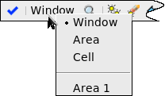

Running Calibre RealTime Digital in Fusion Compiler
Calibre RealTime Digital runs checks on the geometries visible in the Fusion Compiler window plus a halo around the region. The specified check recipe selects the checks that are executed. All Calibre RealTime Digital DRC runs are performed in flat mode.
When using a DRC run type of Window or Area, a region of 25 um x 25 um or smaller is recommended for the best performance.
Prerequisites
You have completed “Specifying the Rule File, Check Recipe, and Calibre RealTime Digital Options in Fusion Compiler”.
(Optional) Specify highlight colors; see “Specifying Highlight Color for Calibre RealTime Digital in Fusion Compiler”.
Procedure
- Select
the DRC run type and start a run:
The DRC run type is selected in the toolbar, in a dropdown menu next to the
 button:
button:
DRC Run Type
Instructions
Window
Runs DRC on the geometries visible in the design tool window:
Choose the Window run type.
Zoom to the region you want to run DRC on and make sure the geometries you want to run checks on are visible. 25 um x 25 um or smaller is recommended for the best performance.
Click the
button to start the run.
Area
Runs DRC on a selected region:
Choose the Area run type.
Click the
button. Use the mouse to drag a rectangle around the area you want to run DRC on.
Cell
Runs DRC on the whole block that is open in the active window.
Choose the Cell run type.
Click the
button to start the run.
Area 1, Area 2, …
Runs DRC on a previously selected area:
Choose the area to run on. The most recent area is always named Area 1.
Click the
button to start the run.
Results
Flat Calibre nmDRC is run on the selected geometries plus the specified halo region around the area. If running in Serial mode, a DRC run is executed for each of the configurations selected in the Configuration Run Control dialog box, in the order specified.
You can use the highlight controls in the integrated toolbar to step through results. If you are using multiple run configurations, the results are displayed separately for each configuration—select the configuration to view in the toolbar dropdown box.
You can also click the  toolbar
icon to open the Calibre RealTime Results window to view results
in a separate window; see “Viewing Results in the Calibre RealTime Digital Results Window”.
toolbar
icon to open the Calibre RealTime Results window to view results
in a separate window; see “Viewing Results in the Calibre RealTime Digital Results Window”.
Rule check comments can be seen by hovering over the rule check name in the toolbar.